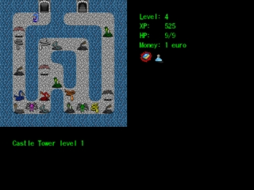

JRPG is a kanji learning game styled after the classic SNES RPG games (like Final Fantasy 6, or Legend of Zelda: Link to the Past). The game tries to help you learn how to read and understand kanji in context, and in doing that it also helps you improve your Japanese vocabulary. You can also use it to refresh your kana.
There is also a playable demo of how JRPG would look like if it was styled after PlayStation 1 RPG games.
There are three ways of installing jrpg:
| Battle with kanji demons. The first time you meet the demon, or when it beats you, it tells a lot about itself, including its pronunciation, meaning of its kanji, and a sentence example with translation to English. | |
| Now some harder demons, in the Icy Mountains. Notice that the verb demons can conjugate themselves, so sometimes you will face 死ぬ, at other times 死にます or 死んだ. | |
| If they beat you too hard, you get automatically transported to the hospital. Now, that's a great health care system. | |
| You can explore the world. | |
| Get quests from NPCs. | |
|  | And bravely go fight the demons. |
| Retrieve the stolen treasures. | |
| Or try with some easier ones first. | |
| Crystal ball will tell you the truth. |
The game's main purpose is helping you learn kanji pronunciation. By doing that, it also makes it easier to learn kanji meanings and Japanese vocabulary.
It's a good idea to look at the screenshots first, then read the text.
In the game, there are two modes:
First you will meet some demons, whose names are just single Hiragana or Katakana characters, then demons whose names consist of many Kana characters, then Kanji demons, from easy ones to about JLPT2 (日本語能力試験 ２級) level.
Depending on the location and how well were you dealing with the past demons, the enemies will be easier or more difficult. If you slay hard demons left and right, the game tries to attack you with even harder demons, so you shouldn't be bored for too long. On the other hand if you have problems with the current enemies, the game will be increasing difficulty level only slowly.
Demons containing more than one different kanji come in many versions. You will meet easy versions first, that is - with harder kanji given with furigana. Once you defeat the easy version a few times, and the harder version at least once, easy version won't attack you any more.
Difficulty of demons depends on location and on your results. If the game is too difficult stay on early locations longer. If it's too easy, quickly finish them and go to the depths of the dungeon - third level of the dungeon is the most difficult. Even if you stay in one location the demons will gradually become more difficult as you defeat the easy ones.
If you kanji demon hits you, it reveals its pronunciation and possibly some hints about its meanings (actually meanings of the kanji it's made of).
Some easy kanji have more elaborate hints, but most of the 1945 general-use (常用) kanji have only single-word keywords. It would be nice to improve that, but it's a lot of work.
The hints are also presented the first time you meet the demon, except for kana and kana-word demons (you can change that in settings).
The game logs all mistakes you make to files mistakes-<date>.txt. You can review them after you finish playing and you have some time to check a dictionary. If you're not interested in this information, you can safely delete these files.
If the game crashes, crash information is saved to errormsg.txt. Attaching this file to bug reports usually lets me fix the bug and release the fixed version in matter of minutes.
The game works under Linux and under Windows. It probably works under other systems, but that was never tested.
If you use all-in-one version for Windows, simply unzip it and play. You don't need to install anything.
Otherwise, you need to install Python (jrpg works with any Python from 2.3 to 2.7) and Pygame library. Just get the newest versions for your platform. As of 2012-05-12 this means Python 2.7.3 and Pygame 1.9.1 for Python 2.7. If in doubt, use 32-bit version.
If you want don't have Python and Pygame installed yet, you can download them from:
As far as I can test it, jrpg works on Linux, Windows, and OSX. If you try it out on a different system, please tell me whether it worked, and whether there were any problems.
If you have any problems with jrpg, please mail me. Most of reported problems are fixed very quickly.
If you want to inform me about anything, mail Tomasz Wegrzanowski (Tomasz.Wegrzanowski [at] gmail.com).
You might also want to visit My blog, where I even write about jrpg sometimes.
{kind=link}
{kind=link}
{kind=link}
{kind=link}
{kind=link}
{kind=link}
{kind=link}
{kind=link}
{kind=link}